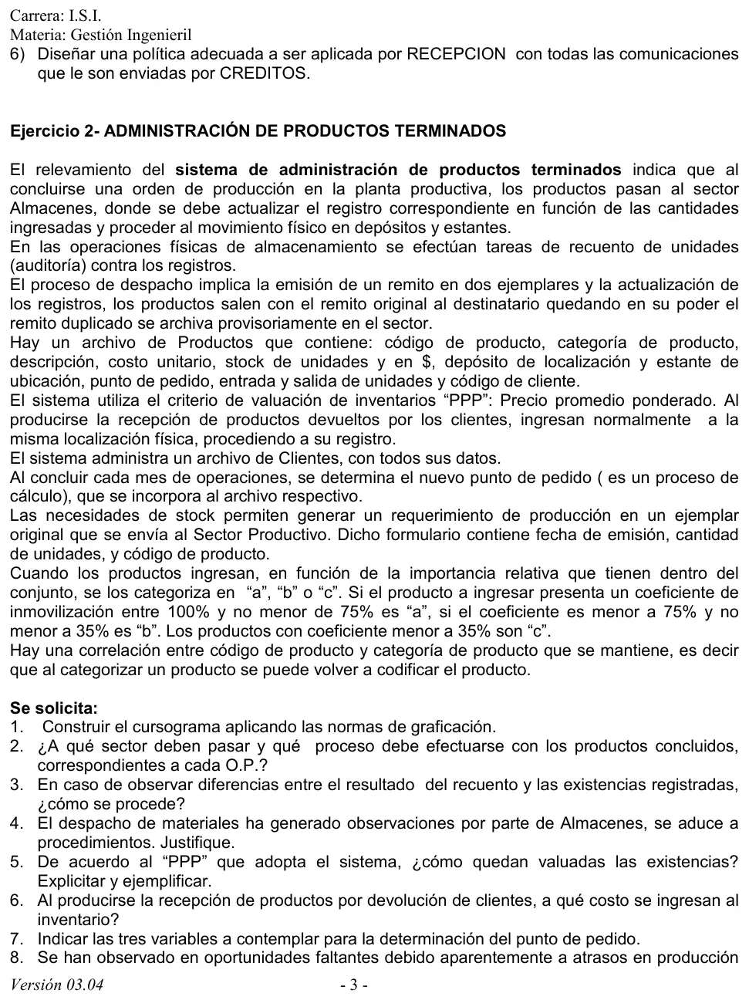
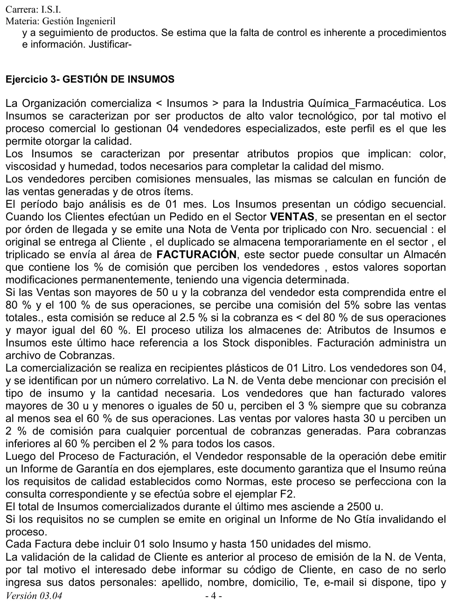

Práctica, ejercicio 2: administración de productos terminados
Práctica de la cátedra, 2017
Enunciado




Propuesta de respuesta
Respuesta no verificada. La propuso Luta Studios con inteligencia artificial y ningún docente la revisó. Puede tener errores.
1. Cursograma
Una columna por sector, con los símbolos del resumen de un alumno que usa la materia. La narrativa describe cuatro circuitos que no se tocan, así que el dibujo tiene cuatro comienzos. Son el ingreso de una orden de producción, el despacho, las devoluciones y el cálculo del punto de pedido con el requerimiento a la planta. El archivo Productos se repite al costado en cada uso. El recuento va en un símbolo de operación y control, porque se hace junto con la ubicación física. Tocá el dibujo para verlo en pantalla completa.
2. Adónde van los productos de cada orden
Pasan a Almacenes, que hace cuatro cosas con cada orden.
- Actualiza el registro de Productos con las cantidades que ingresaron.
- Los categoriza en «a», «b» o «c» según el coeficiente de inmovilización. Es «a» de 75 % a 100 %, «b» de 35 % a menos de 75 %, y «c» por debajo de 35 %. Si cambia la categoría, vuelve a codificar el producto, porque el código y la categoría van juntos.
- Los ubica físicamente en un depósito y un estante, que también quedan en el registro.
- Recuenta las unidades contra el registro.
3. Diferencias entre el recuento y el registro
Las normas de control interno del procedimiento de producción, en el resumen de un alumno, piden recuentos físicos periódicos, ajustes de inventario y documentación de todos los movimientos. Con eso, una forma de proceder es la siguiente.
- Se vuelve a contar, y el recuento lo hace alguien distinto de quien tiene la custodia del depósito.
- Si la diferencia sigue, se buscan los movimientos sin registrar. Pueden ser remitos emitidos y no descargados, devoluciones sin ingresar u órdenes de producción cargadas con otra cantidad.
- La diferencia que no se explica se ajusta con un comprobante de ajuste, firmado por un responsable que no sea el de la custodia. Nunca se corrige el registro a mano.
- Se deja constancia de la causa, para ver si se repite en el mismo producto o en el mismo estante.
4. Observaciones al despacho
Las observaciones tienen razón, porque el procedimiento deja huecos.
- No hay constancia de entrega. El original queda en poder del destinatario y no vuelve nada firmado. En el procedimiento de ventas del resumen de un alumno, el cliente firma el remito y sin ese remito conformado no se factura.
- El duplicado nunca se archiva en forma definitiva. Queda en el archivo provisorio, sin un paso que lo cierre.
- No dice qué autoriza el despacho. El remito no menciona un pedido ni una orden, así que se puede despachar sin respaldo.
- El registro se descarga al emitir el remito. Si la mercadería no sale ese día, el stock del registro ya no coincide con el del estante.
Mejora propuesta. Despachar solo contra un pedido aprobado y emitir el remito en tres ejemplares. El original va con el destinatario, el duplicado vuelve firmado y se archiva en forma definitiva, y el triplicado pasa a facturación. El registro se descarga cuando sale la mercadería.
5. Valuación de las existencias con PPP
Cada ingreso recalcula el precio promedio con la fórmula de la guía, y cada egreso sale al PPP vigente sin cambiarlo.
Un ejemplo con valores de ejemplo.
| Movimiento | Unidades | Costo unitario | Saldo (u) | Saldo en pesos | PPP |
|---|---|---|---|---|---|
| Stock inicial | 1000 | 10.00 | 1000 | 10000 | 10.00 |
| Ingreso de una orden | 500 | 13.00 | 1500 | 16500 | 11.00 |
| Despacho | 600 | 11.00 | 900 | 9900 | 11.00 |
Las existencias quedan valuadas a 11 pesos por unidad, 9900 pesos en total.
6. Costo de una devolución
Una propuesta, porque la guía no lo dice. Lo devuelto entra al costo con el que salió, o sea al PPP del despacho. Así el inventario recupera lo que le habían descontado y el promedio solo cambia si el PPP se había movido mientras tanto.
Con el ejemplo anterior, si vuelven 100 de las 600 unidades despachadas, entran pesos. El saldo pasa a 1000 unidades y 11000 pesos, con el PPP en 11.
7. Las tres variables del punto de pedido
La guía pide tres variables, pero no las da. El resumen de un alumno define el punto de pedido como la cantidad en existencia a partir de la cual se pide, y lo arma con dos de ellas.
- Stock mínimo.
- Margen de seguridad.
La tercera no está en el material del Drive. La que suele completar el cálculo es el tiempo de reposición, lo que tarda la planta en entregar lo pedido. El mismo ejercicio la pone en juego cuando habla de faltantes por atrasos en producción.
8. Faltantes por atrasos en producción y seguimiento
La falta de control viene de cómo está armado el procedimiento.
- El requerimiento de producción va en un solo ejemplar. Almacenes no se queda con copia, así que no puede seguir qué pidió ni reclamar lo que no llega.
- No lleva fecha de necesidad ni número. Tiene fecha de emisión, cantidad y código, pero no cuándo hace falta. Nadie puede saber si la planta está atrasada.
- Nada une el ingreso con el pedido. Cuando llega una orden de producción no se cierra el requerimiento que la originó.
- El punto de pedido se recalcula una vez por mes. Si la demanda sube en el medio, se pide tarde.
Mejora propuesta. Numerar el requerimiento, sumarle la fecha de necesidad y emitirlo en dos ejemplares, con el duplicado en un archivo de pendientes. Cada ingreso cierra su requerimiento, y un control periódico de pendientes vencidos avisa los atrasos antes de que falte stock.
Respuesta no verificada. Puede tener errores.
Se armó con las páginas del parcial y del final, secciones Cursograma, Procedimiento de ventas, Procedimiento de producción, Normas de control interno e Inventarios.
Quedó en duda: La consigna 7 pide tres variables del punto de pedido y la guía no las da. El resumen de un alumno nombra dos, stock mínimo y margen de seguridad. El tiempo de reposición no está en el material del Drive. El costo de las devoluciones al PPP del despacho es una propuesta. La narrativa no dice qué inicia el despacho ni cada cuánto se hace el recuento. El recuento va junto con la ubicación física porque así lo cuenta. Los valores de la consigna 5 son de ejemplo. El cursograma sale del resumen de un alumno.